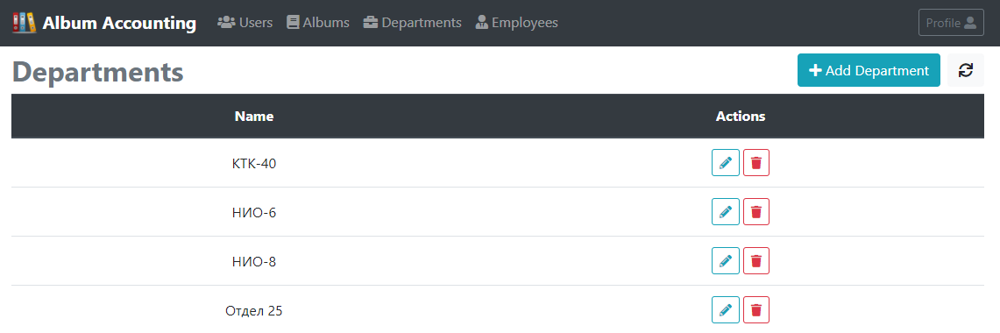

REST API Swagger документация
Source code на GitHub (backend)
Source code на GitHub (frontend)
Docker Compose file
Использованные технологии
Maven
Spring Boot 2
Spring MVC
Spring Data JPA
Hibernate
Spring Security
REST (Jackson)
OpenAPI 3
JUnit 5
JSON Web Token
Angular 2
Bootstrap 4
Описание приложения
Данное приложение используется работниками архива для учета альбомов конструкторской документации, поступающих в архив на хранение, и выдаваемых разработчикам для личного пользования, а также позволяет определять текущее местонахождение требующегося альбома.
Под альбомом в данном контексте понимается некоторое количество взаимосвязанных конструкторских документов, распечатанных на бумаге и переплетенных в книгу. Каждый альбом имеет децимальный номер, равный децимальному номеру главного документа в альбоме, а также "штамп"- специальное обозначение, определяющее производственную область применения альбома.
В приложении используется три вида пользовательских ролей: анонимные пользователи, работники архива и администраторы.
Информация об альбомах
Анонимным пользователям доступна возможность просматривать информацию об имеющихся в архиве альбомах конструкторской документации, а также осуществлять поиск альбомов по их децимальным номерам. Поддерживается поиск альбомов по имени текущего держателя, что удобно использовать при необходимости проверки какие альбомы числятся за тем или иным разработчиком.

Работники архива
Интерфейс приложения расширяется для пользователей с ролью "Работник архива".
Помимо базовой информации об альбомах, а также благодаря тому, что все альбомы в архиве упорядочены по возрастанию их децимальных номеров, работникам архива предоставляются сведения о том, на каком месте (номер стеллажа/номер полки) должен находится тот или иной альбом.
Кроме просмотра данных об уже имеющихся в архиве альбомах работники архива имеют право добавлять в приложение данные о новых альбомах, а также редактировать информацию об уже имеющихся, в том числе указывать отдел и разработчика, которому был выдан альбом. При необходимости работник архива может удалять данные об альбомах.
Помимо действий с альбомами работники архива могут просматривать информацию о разработчиках предприятия, выбирая интересующий отдел. Им доступна возможность добавлять новые данные о разработчиках, редактировать и удалять имеющиеся. В дальнейшем эта информация используется работниками архива для выдачи альбомов разработчикам.

Профиль
Любому авторизованному пользователю приложения доступна возможность просмотреть свой профиль, а также сменить текущий пароль.
Задачи администраторов
У администраторов имеются все возможности, перечисленные для работников архива. Кроме того одной из их задач является работа по вводу данных касательно отделов предприятия. Администраторы имеют возможность просматривать информацию об отделах, вносить в приложение данные о новых отделах, редактировать и удалять информацию об уже имеющихся.

Однако основной задачей администраторов является менеджмент пользователей приложения.
Администраторы имеют возможность просматривать информацию о пользователях с опцией поиска по имени или адресу электронной почты.
Они имеют право создавать новых пользователей, назначая им соответствующие права доступа, редактировать информацию об уже имеющихся пользователях, блокировать и удалять их учетные записи. Им доступна возможность изменять пароли пользователей, что удобно использовать, если пользователь не может вспомнить свой текущий пароль.